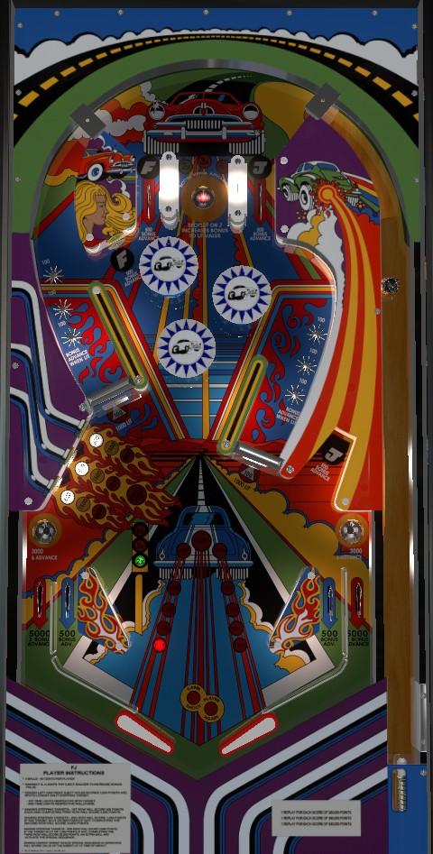

Collect the letters F and J from the top lanes or the upper left and lower right standup targets to qualify the top saucer to give bonus multipliers. A significant scoring boost can be earned by shooting the lower left and lower right saucers twice each to light the spinners for 1,000 per spin and the star rollovers for bonus advances, but it's hard to do so with skill rather than luck, so focus more on just shooting the ball back to the top of the table when possible.
The below picture of FJ's playfield was taken from the VPX recreation by 32assassin.

The left and right top lanes score 500 points and a bonus advance, and light the letters F (left) and J (right). The top saucer scores 3,000 points and either 1 or 2 bonus advances depending on game settings. If F and J have not both been collected, the top saucer will spot one of the letters you don't have, prioritizing the F if you don't have either one. If F and J have both been collected, the top saucer advances the bonus multiplier in the sequence 2x-3x-5x. Advancing the bonus multiplier to either 2x or 3x (depending on game settings) will light the bumpers to score 1,000 points each instead of 100. The letters F and J can also be earned at the upper left and lower right standup targets, which also score 500 points and a bonus advance, but these specific targets should not be part of a direct strategy; just try to get back to the top of the table for your letters instead.
Both orbit shots contain a spinner and 3 star rollovers. To begin each ball, the spinner scores 100 per spin and the star rollovers score 100 points. The lower left and lower right saucers above the out lanes score 3,000 points and either 1 or 2 bonus advances based on game settings. Making the lower left saucer once on a ball lights the left spinner for 1,000 points per spin for the rest of the ball; making the lower left saucer a second time in one ball lights the left star rollovers to each award a bonus advance alongside their 100 points. The lower right saucer does the same to the right spinner and the right star rollovers. The lower saucers are very difficult and dangerous to shoot directly, if indeed they are possible at all; the majority of the time, a ball will only end up in a lower saucer off a slingshot bounce.
The lower left standup targets have 4 stages of progression. Depending on game settings, the target progression will either reset every ball or be held in memory for each player from ball to ball.
FJ has a conventional in/out lane setup. Out lanes score 5,000 points and 2 bonus advances. In lanes score 500 and 1 bonus advance. There is no center post and there are no out lane save features.
Bonus is advanced by any F or J lane or target, the in lanes, or lit star rollovers. Any saucer will give 1 or 2 advances based on game settings. Out lanes give 2 advances. Bonus multipliers are earned in the sequence 2x-3x-5x by making the top saucer after lighting both F and J. Max bonus is 5x 29,000 = 145,000 points. There is no mid-ball bonus collect, and there is no way to hold any part of the bonus over from ball to ball.